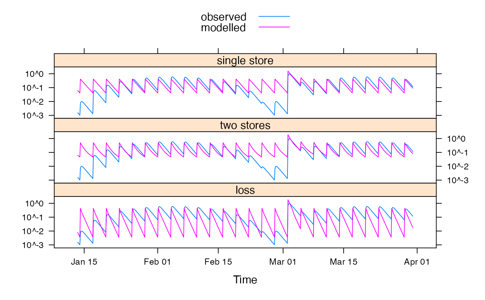
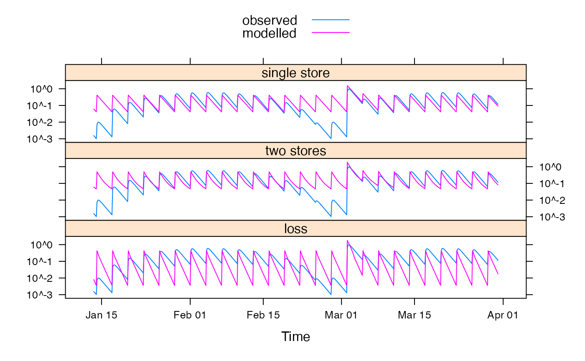

Plot results from a set of model runs using Lattice graphics.
# S3 method for runlist
xyplot(
x,
data = NULL,
...,
all = FALSE,
superpose = FALSE,
x.same = TRUE,
y.same = NA,
layout = c(1, NA)
)
# S3 method for runlist
qqmath(
x,
data = NULL,
...,
all = FALSE,
residuals = FALSE,
superpose = FALSE,
f.value = ppoints(100),
tails.n = 100,
type = "l",
auto.key = list(lines = TRUE, points = FALSE)
)Arguments
- x
a
runlistobject, which is a list of fitted model objects.- data
ignored.
- ...
further arguments are passed on to plotting functions.
- all
passed to
fitted()andobserved().- superpose
to overlay all model result series in one panel.
- x.same, y.same
passed to
xyplot.list. series.- layout
Placeholder
- residuals
to plot the residual series rather than fitted and observed series.
- f.value, tails.n
arguments to
panel.qqmath.- type
Placeholder
- auto.key
Placeholder
Examples
data(HydroTestData)
mod1 <- hydromad(HydroTestData,
sma = "scalar",
routing = "expuh", tau_s = 10
)
mod2 <- update(mod1, tau_s = 20, tau_q = 5, v_s = 0.5)
mod3 <- update(mod2, loss = 0.5)
mods <-
runlist(
`single store` = mod1,
`two stores` = mod2,
loss = mod3
)
xyplot(mods, superpose = TRUE)
 xyplot(mods, scales = list(y = list(log = TRUE)))

xyplot(mods, scales = list(y = list(log = TRUE)))
